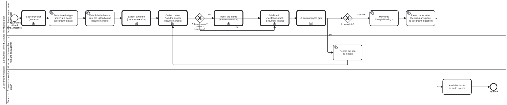

Generated from
folio-assistant-core/skills/library/ingestion/l1-document-ingestion.md— do not edit here.
L1 document ingestion
This is a refinement, not the entry point. The harness’s
library-ingestion
skill carries the basic flow every asset takes — an upload is accepted, its
metadata goes into the knowledge graph, and the asset lands in library/ if it
is materialized — together with the two entry points, the upload’s retirement
to fsh-guts/, and the remote half. This skill is what happens next when
the asset is a document whose text and structure are wanted as L1 source
content: reading it into sections, blocks and sidecars that check:l1-complete
can judge.
Placement PR6 (bean apcg, owner ruling 3 of 2026-09-30) moved these sections
here from the harness skill: “only basic doc ingestion high level workflow in
cat-harness … more detailed doc ingestion/cataloguing methodologies in
folio-asst-core.” The rung code did not move — scripts/ingest-document.ts,
the pdf-*.py rungs and notebook-structure.ts stay in the harness, and the
owner’s standing instruction that OCR stays there stands. This skill is the
METHOD that chooses among them; invoking harness code from here is a downward
edge. The executable form is processes/library/l1-document-ingestion.bpmn,
which calls the harness’s basic Process_Ingestion first and then the four
ingest-* phases beside it.
The whole path is two commands (bean apui)
bun run cat ingest uploads/FILE.pdf --library <lib> # rung + every derived arm, into ingest-staging/
bun run cat ingest uploads/FILE.pdf --library <lib> --promote # the L1 gate, then into <lib>/<slug>/
Staging prints the second line for you, built from your own arguments — it
used to recompose the path relative to the instance root, which is “not there”
from where bun run runs, and to drop --library.
--promote writes the entry’s JSON-LD nodes, for that entry only, with the
same buildEntryNodes the corpus generator uses. They are minted for the
destination, not for staging: an entry’s instance is read off where it sits,
and ingest-staging/ belongs to whichever instance holds it. Before this, an
entry promoted into a sibling library named the wrong instance in its manifest
@id, and gen-library-jsonld --check failed on it until somebody ran the
corpus-wide generator by hand. You do not need gen-library-jsonld or
check:l1-complete --write after promoting — the first is done, and the
second’s verdicts live on the qa-reports branch rather than on main.
Which rung, and why there is more than one
| rung | when | what it produces |
|---|---|---|
pdf-structure.py | any PDF with a text layer | the outline’s chapters; with no outline, the inferred contents when it is trusted, else one section per page (issue #2302) |
pdf-pages.py | a page tree by hand: --first-page-label, or --from-ocr text | one section per page |
pdf-ocr.py | text extraction yields almost nothing | a text layer to then page-split |
pdf-tables.py | tables or figures matter | what pdf-structure/v1’s Section does not carry |
slides-structure.py | the package declares a PPTX or ODP deck | one section per slide, images.json, accessibility.json |
referenced-source.py | --reference given: the licence forbids a copy | referenced.json only — identity, sha256, outline; no text |
text-structure.ts | the source is text files — Markdown, MDX, XML — usually fetched from a repository at a commit | text-structure/v1: a Markdown file divided by its own ATX headings outside fenced code, any other file one verbatim section, located by file and line range; images recorded by digest, never sectioned |
notebook-structure.ts | the file is JSON with a numeric nbformat and a cells array — a Jupyter notebook, decided by content, never by the .ipynb name | notebook-structure/v1: one section per markdown heading, located by cell range; code kept as fenced code and never run; outputs not kept, and structure_note says so |
A notebook is a variant, not a PDF with odd pages (bean rkqp, owner
2026-09-30, “A+B”). structure.json has a shared base
(schemas/document-structure.ts): the PDF format is one variant, unchanged, and
the notebook format is the other. A reader that needs only sections reads either
through structureOf(), which says where a section is as {pages} or
{cells}. A page-aware reader gets nothing from a notebook, rather than a cell
index mistaken for a page number.
The decision is mechanical, and the corpus shows all three paths. Measured
2026-09-19 over the four entries in library/:
toc_source: outline→pdf-structure(9789241548960-eng, 250 sections)toc_source: none,source.text_source: embedded→pdf-structure, which keeps its inferred contents only when they pass the trust tests and otherwise writes pages (wpr-rdo-2020-003-englands on pages that way). The router sent this case topdf-pagesuntil 2026-10-07 (beanmffs), so #2388’s tests never ran frombun run cat ingest- a junk outline (
milnorlink, bean8shg) →pdf-pages:pdf-structurewould read the outline it found rather than infer one toc_source: none,source.text_source: ocr→pdf-ocrthenpdf-pages --from-ocr(who-pub-tps-931)
Slide decks — PPTX and ODP (bean scfh, issue #1614)
A deck is a zip that declares its type ([Content_Types].xml, or ODF’s
mimetype member), so it routes on the sniff, before the archive rung, exactly
as a workbook does. slides-structure.py writes the same pdf-structure/v1
shape a paged PDF gets — one section per slide,
page_start == page_end == <slide>, granularity: "slide" — so
l1-blocks.ts, the manifest and
check:l1-complete read it unchanged. Two differences from the PDF rungs, both
measured on the #1614 deck:
- A slide’s title is its title placeholder, or it is
Slide N. Never the largest text box: that is the inferred-TOC failure below in a new format. It is also an accessibility finding, because a slide with no title placeholder cannot be navigated to by name, so the two questions share one answer (title_source: placeholder | nonein each section’s front matter). - No image is a
page-scan. A full-bleed picture alone on a slide is the slide’s content, not a scan of text already extracted.
accessibility.json reports, per check, what the package can answer — slide
titles, alt text (with editor auto-captions such as “Description automatically
generated” counted as failing, since nobody wrote them), decorative marks,
language tags, document title, speaker notes — and says undetermined for the
three it cannot: reading order, images of text, contrast. It gives no overall
score. A single number would weigh a missing title against a missing alt text,
and nothing supports that weighting.
Two copies of one deck? Compare before you choose which to ingest:
python3 cat-harness-tools/scripts/slides-structure.py --a11y-only DECK.pptx DECK.odp
On #1614 the two were Google Slides exports with identical image bytes. The PPTX
kept per-run lang and the author’s few alt texts; the ODP export dropped all
alt text and kept the language only on the default style. Prefer the copy that
wins the per-check comparison. An export can lose what the author wrote, and the
format’s reputation does not tell you which way this particular export went.
Image descriptions go in the library’s image-verdicts.json as for a PDF. Put
the inspector in attribution.<doc-id> when they are not the file’s
inspected_by; without it the deck inherits the first inspector’s name and
date.
A source whose licence forbids a copy — record it, do not ingest it (bean scfh)
Some sources may be read but not reposted. The OMG BPMN and DMN specifications permit use on condition that a copy “will not be copied or posted on any network computer or broadcast in any media”. A normal ingest commits every section’s text to a public repository, which breaks that condition. It does so silently, because nothing in the text layer says so.
bun run cat ingest FILE.pdf --reference IDENTITY.json --library <name>
IDENTITY.json holds the title, version, document number, date, publisher,
URL and the licence clause, read off the document. A missing field is
refused, never guessed. The entry holds referenced.json — the exact bytes’
sha256, the embedded outline (clause titles and pages, so a citation can still
name a clause), a folio-materialization/v1 record in state referenced, and
why the text is withheld — plus a manifest with an empty contains, and a
licence.json quoting the clause.
The choice is the caller’s, never inferred. Whether a licence permits
posting is a reading of the licence, not of the bytes. check:l1-complete
knows the kind, and refuses a referenced entry that holds sections/,
blocks/ or images/. That would be the copy this kind exists not to make.
A publication, not a file — an external reference (owner, 2026-10-02). A
FHIR implementation guide is a website and a package, not one PDF, so there are
no bytes to hash. Its referenced.json takes the published variant of
source (schemas/referenced-source.ts): kind: "published", url,
canonical, package_id, version, and read_from / read_at naming the
local record the identity was read off — no sha256, rather than a made-up
one. links names where a reader goes instead (the publisher’s page, and a
site_path on this site such as the instance’s artefact index), and the
library viewer shows them on the entry’s row. Write it by hand — there is no
file to run referenced-source.py on — then gen-library-jsonld.ts --entry
for the manifest. The licence follows the usual rule: stated only with a
basis, else unknown with where you looked. First case:
the WHO SMART Trust IG’s entry in the DAK layer’s library/.
A source published as text in a repository — read it at a commit (bean y4uj)
The Gherkin reference, the MCP specification, the hmans/beans README and
FHIR R5’s TestPlan resource (issue #1614 item 4) are published as Markdown or
XML in git repositories. Printing one to PDF so a PDF rung can read it makes
the recorded sha256 identify a rendering nobody published, so they take their
own rung instead:
bun run cat ingest uploads/FILE.md --text --library <lib> # rung + l1-blocks, into ingest-staging/
bun run cat ingest uploads/FILE.md --text --library <lib> --promote # the L1 gate, then the entry and its KG nodes
--text is the CALLER’s statement that the file is text: text has no magic
bytes, so the extension is never read, and a binary handed in as text is
refused as undetermined. Through cat ingest it takes the notebook’s derived
arm (l1-blocks), and --promote writes the entry’s JSON-LD nodes, as for
every rung. Do not stop at the rung. Run alone, text-structure.ts leaves
an entry with no manifest.jsonld and no section or block nodes, which is how
litlfred/dth-hrh’s Markdown outline reached library/ with no knowledge graph
(2026-10-14). A source read at a commit, with its upstream.json and several
files, still runs the rung directly:
bun run cat-harness-tools/scripts/text-structure.ts -o <library> --doc-id <slug> \
--base <checkout> --upstream upstream.json [--title T] [--image F]... FILE...
and then, without fail, l1-blocks.ts -o <entry> and
gen-library-jsonld.ts --entry <entry>, as for a notebook. What it decides:
- Divided by the author’s headings, or not at all. A Markdown file splits
at its own ATX headings, outside fenced code. A
# commentinside agherkinblock is not a heading. Any other text, and anything that opens with<, is one section, fenced verbatim. Nothing is rendered: shortcodes and JSX stay as written, andstructure_notesays so. upstreamrecords the exact revision: repository, 40-hex commit, ref, path, and in words whether that revision is the published text or a working copy. A default branch is often neither, and a reader cannot tell which from a URL. Keep the clone out of the repository tree. The bytes can be fetched again from the commit, so none go touploads/orfsh-guts/.- Several files are one source when the publisher ships them as one, as
with a specification version that is a directory of pages. Each file keeps
its own sha256. The source’s sha256 is the sha256 of their
sha256sumlisting, sosha256sum -cagainst a checkout verifies the entry without this code.
Routing a dropped .md was decided on 2026-10-14 (owner): by --text, never
by the extension.
From a library entry to a folio document — seed it, and its graph comes with it
A folio whose working document starts from a source (an outline, a draft, a report) is SEEDED from the library entry, not from the raw file:
bun run cat-harness-tools/scripts/seed-folio-from-library.ts \
--entry library/<doc-id> --slug <folio-doc> [--title T] [--author A]... [--force]
Any structure.json variant works. The top heading level becomes the
chapters, deeper levels nest as sections, and a section’s own text becomes
one prose block. No kind is guessed: a persona or a requirement is the
folio’s own enrichment step. Every block carries meta.source (library,
section, locator, method: "library-seed"), and the seed ENDS by writing each
block’s .jsonld with gen-block-jsonld’s own code. A folio-specific seed
script that writes blocks must end the same way. The one litlfred/dth-hrh used
did not, and its site published no graph. A seed is one-time: an existing
document is refused unless --force, which discards hand edits.
The original is never touched: the library entry and the folio’s nodes are
DERIVED, and both are checked (gen-library-jsonld --check,
gen-block-jsonld --check) so neither can drift unseen.
An inferred chapter tree is refused, not guessed
This is the rule most worth understanding, because the failure it prevents is silent.
Without an outline, a heading-detector can infer a table of contents — and an
inferred TOC is confidently wrong in a way the output does not show. Two
measured cases, both recorded in bean 6xaz:
WPR-RDO-2020-003-eng.pdf— 11 of 13 inferred sections were named after a different publication, because page 22 reproduces a sample table from one as a design example.WHO_PUB_TPS_93.1.pdf— inferred entries took page numbers from the contents pages, so 26 of 42 sections came out under 500 characters while 37,923 characters landed in one section misnamed18-usetul-reference-books.
So pdf-pages claims no chapter tree and says so in structure_note. A
page is a determined division; an inferred chapter was not. Same third-state
rule the rest of this repository keeps: a structure that could not be determined
is never rendered as one that was.
The route pdf-structure.py takes itself (issue #2302, owner 2026-10-07)
With no outline, the inferred contents is used only when it passes all three
tests, in order (inferred_toc_trust):
- concentration (
6xaz): at most 60% of its entries may start on the two commonest pages — a list read off a page is not the document’s structure; - mean confidence ≥ 0.6 (
TOC_MIN_MEAN_CONFIDENCE), each entry’s confidence being how much independent evidence agreed — a contents page, the body, a heading style, a numbering run; - headings with bodies (owner, 2026-10-07): from 5 sections up, no more
than 25% of the sections the tree would cut may hold under 50 characters
(
TOC_MAX_EMPTY_SHARE,TOC_EMPTY_SECTION_CHARS), front matter not counted — a tree of empty sections is logo lettering, a sample table’s column heads or a cover’s address block, not chapters.
Otherwise — refused, or nothing inferred — the entry is split one section per
page (page-001, “Page 1”, the shape pdf-pages.py writes), with
granularity: "page", toc_source: undetermined or none,
toc_undetermined_reason, and a structure_note saying why. Both inputs are
recorded whether or not they passed: diagnostics.toc_inferred_entries and
diagnostics.toc_inferred_mean_confidence and
diagnostics.toc_inferred_empty_share. It used to emit one section
holding the whole document, which is determined but uncitable.
What the floor does and does not catch, measured 2026-10-07 on the 40
corpus PDFs with no outline and the 35 with one (outline hidden): every
consensus TOC scored a mean between 0.60 and 0.94, and the mean is a weak
predictor of quality — W3C PROV-O scored 0.72 at title F1 0.23. A mean of
exactly 0.60 means no entry was corroborated by anything but its style;
“at least 0.6” lets those through (8 outline-less documents, some fine, some
not), so read a font TOC at 0.60 before citing it. The floor’s real work is
on the regex fallback, whose entries carry no confidence and count as 0.
The third test is the one that catches a poor font tree, measured on 72
corpus PDFs the same day: every inferred tree with title F1 ≥ 0.7 had at most
20% empty sections, and the only document newly refused at 25% was
WPR-RDO-2020-003-eng (48%: 18 empty sections of logo text and table heads,
mean confidence 0.602, which the first two tests passed). Known miss: a poor
tree at 22.5% (strauch-carbno, title F1 0.36) is too close to the good ones
to separate by this measure.
What a complete L1 entry holds
library/<bib-slug>/
structure.json "$schema": "pdf-structure/v1" — doc_id, toc_source,
granularity, sections[], structure_note,
source{} (see below; source.text_source says embedded|ocr)
sections/ one Markdown file per section, front matter + body
blocks/ the block projection consumers read
manifest.jsonld @id, @type folio:SourceDocument, contains[], provenance
summaries.json agent summaries of prose blocks, a QA sidecar (see below)
ocr/ page-NNN.txt, only where the source was scanned
bun run cat check:l1-complete is the gate. It reports three states, never two: a
requirement met, unmet, or not yet derivable — the last because the
per-format arms (images, audio, tables, archives) are tracked separately and a
check that cannot run must not read as a pass. Bean pn6j.
A manifest’s title — the authority order, and never the page-1 parse
The owner’s ruling of 2026-10-01 (issue #1794, option 2 of 4). A library
entry’s manifest.jsonld title is the first of these the entry has:
| rank | meta.title_source | read from |
|---|---|---|
| 1 | dc-record | dc.title of the Dublin Core record that the catalogue node naming this entry (libraryId) points at through metadataRef |
| 2 | referenced | referenced.json identity.title |
| 3 | pdf-info | structure.json metadata.docinfo.Title, the PDF Info /Title, when it is not junk |
| 3 | text-heading | structure.json metadata.title of a text or notebook structure: front-matter title:, --title, or the level-1 heading |
| 4 | slug | the entry id. Nothing better exists, and check:library-qa reports it as title-missing |
The page-1 front-matter parse is NEVER a title. On a pdf-structure/v1,
metadata.title is parse_front_matter’s guess at which lines of page 1 are
the title. It guessed Abies for the WHO editorial style manual, LeanArchitect
LeanArchitect, Algorithmic Approaches to, and the whole W3C status block for
three specifications. A plausible wrong title passes every check that has no
second source. A slug is honest about being a placeholder and gets flagged.
The parse may still feed search and the section files’ doc_title.
text-heading shares rank 3 because it is the same kind of fact as /Title
(the source naming itself, in its format’s own metadata). The two are exclusive
by variant, so no entry ever has both. A tabular record’s title is its source
file name, which is never a title.
Junk /Title (pdfInfoTitleJunk): shorter than 3 characters or no letters;
untitled and its kin; Microsoft Word - …; an arXiv stamp
(arXiv:0909.4061v2 [math.NA] …); anything ending in a file extension; the
source’s file name or stem; the slug. A junk value falls through to the next
source. It never becomes the title. Records (ranks 1–2) are taken as written,
because a cataloguer’s choice is not a program’s default.
Record the Info dictionary at ingest. pdf-structure.py writes
metadata.docinfo. pdf-pages.py did not until #1794, which left 20
page-granular entries with no /Title to read. Backfill an older entry with
python3 cat-harness-tools/scripts/pdf-pages.py --docinfo-into <entry> <pdf>. It
refuses unless the PDF’s sha256 is the one the entry recorded.
One resolver, cat-harness-tools/pipeline/library-title.ts
(resolveLibraryTitle, TITLE_AUTHORITY), is used by both
gen-library-jsonld.ts and check-library-qa.ts. The manifest records
meta.title_source and meta.title_from, and the QA check re-derives the
order from the entry’s files. So a manifest that claims pdf-info while a
catalogue record exists is reported as title-implausible, not believed.
source{} — the technical facts, written by whichever rung ran
Every rung writes source on structure.json, from the single definition in
scripts/_tech_meta.py: file, full 64-hex sha256, bytes, mtime (the
SOURCE’s, UTC to the second — not the ingest time, because what tells you a
re-fetch got something new is the file changing), mimetype_sniffed and
mimetype_source. Both rungs add text_source, embedded or ocr: ONE field and ONE
vocabulary for where the section text came from (issue #1121; pdf-pages used to write a
top-level text-layer). pdf-structure also adds pages and extractor.
The mimetype is sniffed from the leading bytes and never falls back to the
extension. An extension is a claim by whoever named the file; the magic bytes
are what the content is, and a .pdf that is really an HTML error page
extracts to nothing while every downstream verdict is about the wrong document.
Unrecognised bytes give mimetype_sniffed: null with mimetype_source:
"unrecognised" — the third state again, and it is load-bearing: a guess that
agrees with the filename is indistinguishable from a real sniff, which would
make the field worthless for the one case it exists to catch.
This was a gap in the no-outline rung, not a new requirement.
pdf-structure.py wrote source; pdf-pages.py wrote none and merged into
whatever file already existed — so library/milnorlink/, the one entry
pdf-structure never touched, carried no technical metadata at all, and the
other page-granularity entries had it only because pdf-structure ran on them
first. Bean nso8.
bun run scripts/ingest-document.ts <pdf> --refresh-meta backfills an existing
entry. It reads the indent off the file rather than choosing one: the two
rungs write at different widths, and hardcoding either reformats every entry
the other authored — measured at 4 349 changed lines to add three fields.
provenance — who wrote it, and the closed union that makes omission impossible
Every block declares how its text came to be. The vocabulary is
schemas/attribution.ts, and it is closed:
- the literal
"ingested"— verbatim source text. There is no author to name; the document it came out of is recorded bysource{}above. - an
Attribution—kind(script | agent | human),id, and optionallyversion,model,session,date,skill.
An agent must name its model, structurally. A narrative is a claim by
somebody, and the difference between “a curator described this figure” and “a
model described it, version X” is exactly what a reader needs in order to weigh
it — and what makes the set re-generatable when that model is superseded. An
agent attribution with no model records that a machine wrote it while losing
the only part anyone can act on, so AttributionSchema refuses it.
The vocabulary is the QA reviewer’s, not a second one. block-qa.ts
re-exports ATTRIBUTION_KINDS as QA_REVIEWER_KINDS; the same three
participants review and author. What is not shared is QaReviewer itself,
most of which is about whether a criterion’s cached verdict is stale.
What the gate can and cannot enforce
check:l1-complete checks two things per block, and the second is the point:
provenanceparses as aProvenance. An open string, a malformed attribution, anagentwith nomodel— allunmet.- A block of an authored kind must not claim
"ingested".
LIBRARY_BLOCK_ORIGIN classifies each library block kind as extracted or
authored, and a test asserts it is total over what actually occurs in
library/ — so a narrative arm cannot land a new kind without classifying
it, and classifying one authored arms requirement 2 immediately.
Closing the union does not stop an arm asserting something false. It makes the
omission impossible: a new arm has to choose, and choosing "ingested" for
a generated description is a false statement rather than a missing field.
Today every one of the 424 blocks is extracted prose, so the narrative count
is a real, reported zero — never silence. The authored branch is proved to fire
by fixtures in scripts/tests/attribution.test.ts, not by the corpus: a checker
that returned “fine” unconditionally would pass the corpus just as well. Each of
the three branches is mutation-checked — removing it fails a named test. Bean
iqim.
Archives — the entry list is data, and the rung is chosen by CONTENT
A tar or zip in uploads/ is opaque to every grep in the corpus: a search for
a filename inside one finds nothing, and that absence is indistinguishable from
the file not being there. scripts/archive-contents.py writes
library/<slug>/contents.jsonld — one schema whatever the container
(schemas/archive-contents.ts), so a consumer reads archives without knowing
whether it was tar or zip.
Per entry: path, bytes, sha256, mtime, mimetype_sniffed,
mimetype_source — the source{} vocabulary above, reused verbatim, because
an archive entry is not a different kind of thing from a loose file. The
mimetype is sniffed from the entry’s own leading bytes, never from its name,
for the same reason it is outside an archive.
Four entry states, not two: a directory carries no size and no digest (a zero
would be a measurement nobody made); an unreadable member is
mimetype_source: "unreadable", which is not an empty file; a symlink or
special is listed with its kind rather than dropped. Dropping directories
would make an archive of empty ones indistinguishable from an empty archive.
A file the sniffer does not recognise as an archive is refused — an empty
entries[] would read as an empty archive, a different fact.
The rung is chosen before anything opens the file as a PDF
planFor sniffs first. Handing it a zip used to answer undetermined with
why: "no PDF backend: No module named 'fitz'" — the refusal was right and
the diagnosis was wrong: it reported a missing tool when the fact was that
the file is not a PDF, and a reader would go install PyMuPDF and fail again.
A file named .pdf that is really a zip now takes the archive rung, which is
the case only a sniff can decide.
What the gate checks, and the determined zero
Which entries the requirement applies to is derived, not guessed: source.
mimetype_sniffed is already on every entry, so “this came from a zip” is a
recorded fact. An archive entry must carry a contents.jsonld that validates
against the declared schema.
uploads/ holds four PDFs and no archives, so every entry reports
not an archive (application/pdf) — said out loud rather than passed in
silence, because “nothing to check here” and “the check never ran” are
different facts. The requirement is proved to fire by fixture archives built in
scripts/tests/archive-contents.test.ts, and each of its four branches is
mutation-checked. Bean twqe.
Datasets — findable by their headers, and the narrative nobody wrote
scripts/tabular-records.py writes library/<slug>/tabular.jsonld: sheet
names, the header row, and the shape of each sheet. header_vocabulary is the
union across sheets, and it is the field a grep for a column name lands in —
without it a dataset is stored but not findable, and a failed search is
indistinguishable from the dataset not having that column.
The record is real JSON-LD, and so is contents.jsonld (bean yh6u).
Both used to be named .jsonld with an @id and no @context, so a JSON-LD
processor dropped every key they wrote. Both arms now emit the published
content context (the URL lives once, in scripts/_content_context.py, pinned
to CONTENT_CONTEXT_URL by a test), and every key is a declared term. The
facts a consumer queries across documents — format, the counts,
header_vocabulary — are real terms; the nested structures that are ours —
sheets, entries, the technical metadata, the narrative — are @json
literals, because that is how their nulls survive: rows: null means
“could not be counted” and narrative.text: null means “nobody has written
one”, and JSON-LD drops a null anywhere else. Records written before this
carry no @context; the schemas accept that, since folio repositories hold
them.
Stdlib only (zipfile + xml.etree, csv). This repository declares no
Python dependencies — no requirements.txt, and CI installs only ruff — so a
tool needing openpyxl would pass locally and fail there. Everything this arm
needs is in xl/workbook.xml and each sheet’s <dimension>. Verified by
reading back a workbook openpyxl itself wrote, with openpyxl uninstalled.
The narrative is a state machine — drafted by an agent, confirmed by a person
schemas/narrative.ts: not-authored → draft → confirmed, with rejected
as a real fourth state. The owner chose this (2026-09-19) over plain agent
attribution and over writing every narrative by hand.
Two attributions, because they are two acts. drafted_by is who wrote the
words; confirmed_by is who accepted them. The question a reader most wants
answered is not “did a machine touch this” but “has a person agreed to it”.
An agent cannot confirm its own draft — confirmed_by.kind must be
"human", structurally. That one refinement is the entire difference between
the chosen design and the one it replaced: without it, confirmed degrades
into “an agent said so twice”.
But a rule about who may act cannot be enforced by a rule about what is
written. Driving the CLI in an agent container wrote
"rejected_by": {"kind": "human", "id": "Claude"} — git config user.name is
the agent’s, so it recorded itself as the reviewer, and the schema could not
see it. reviewer() therefore refuses outside a terminal: a person confirming
at a prompt has one, an agent’s subprocess and CI do not. This stops accident,
not fraud — an agent that set out to forge a confirmation could allocate a pty
— but it makes it impossible to confirm a narrative while going about other
work, which is the failure that would actually have happened.
rejected keeps its reasons. A rejected draft silently re-offered wastes
the reviewer’s time; one that vanishes lets the next agent redraft the identical
thing — the argument scrapped wins on for beans, and the one
qa-review.ts’s Decision makes by requiring a note saying why this outcome
and not another.
Reviewing: bun run cat narratives
Numbered list, numbered reasons, because the owner has very limited hand
function and a review step that demands a typed sentence is one that will not
happen — at which point confirmed means “nobody got round to objecting”,
which is worse than not having the state.
bun run cat narratives # what is waiting on you
bun run cat narratives:confirm 1
bun run cat narratives:reject 1 --why 2 # or --why-text "..."
check:l1-complete’s narrative-review validates every narrative-bearing file.
A draft is reported, not failed: it is work waiting on a person, and
failing it would make an unreviewed queue indistinguishable from a broken arm.
A null rows/columns is likewise not an empty sheet: shape_source says
whether the shape was read, counted, or undetermined.
Summarising prose blocks — a QA sidecar, drained slowly
Owner, 2026-09-24: “on library/ page, the extract of a node is shown, but no agentic summary”, and on scope: “Make as QA sidecar as part of general doc ingestion to slowly drain.”
The block stays verbatim. A prose block is the source’s text,
provenance: "ingested", and re-ingestion regenerates it. A summary is an
agent’s account of that text, so it lives beside the blocks in
library/<slug>/summaries.json (folio-block-summaries/v1,
schemas/block-summary.ts): one record per block, holding block, source
(the section file), source_hash and a narrative. That narrative is the
state machine above, not a second one: draft, confirmed by a person only,
rejected with a reason, and an agent author must name its model.
source_hash makes a changed source read as STALE. It is the sha256 of
the section text the summariser was shown (proseBody). Re-ingest a document
and any section whose text moved puts its summary back in the queue, marked
stale. bun run cat narratives shows it and refuses to confirm it.
The queue is derived, so nothing enqueues. Every prose block in every declared library is in it until it has a current draft or confirmation. A rejected draft is back in it, and its rejection reason travels with it.
bun run cat summaries # the backlog, per entry
bun run cat summaries:next -- --n 5 [--entry <slug>] # next K blocks WITH their text, as JSON
bun run cat summaries:record -- drafts.json # write drafts; validated, all or nothing
drafts.json is {drafted_by: {kind: "agent", id, model, session}, drafted_at,
drafts: [{block, source_hash, text}]}, with source_hash echoed from
summaries:next. record refuses a state other than draft, a hash that no
longer matches, and a block that already has a current summary.
Drain K at a time during ingestion work, not all at once: a thousand unreviewed drafts at once is a buried reviewer. Write in your own words, from the block’s text only, adding nothing from outside it.
Length scales with the source (owner, 2026-10-06: “summaries 1-4 short-medium-long sentences depending on length of source content”):
| source text | summary |
|---|---|
| under ~150 words | 1 short sentence |
| ~150–600 words | 2 sentences, short to medium |
| ~600–2,000 words | 3 medium sentences |
| over ~2,000 words | 4 sentences, medium to long |
A one-paragraph section does not earn four sentences, and a chapter is not
done justice by one. If the
extraction put the wrong text under a heading, summarise what is there and say
so. The backlog is reported by check:l1-complete (block-summaries) and on
the library page. It is advisory, never a gate. What the gate does fail is a
sidecar that does not parse, names another entry, or holds a record for a block
or source that is not there.
The Document panel — what a reader browses (issue #2302)
Every entry carrying a structure.json gets a Document panel in the
library viewer, built from the ingestion schema by
cat-harness-tools/scripts/lib/library-document.ts and published as
assets/library/entries/<id>.doc.json (folio-library-document/v1) by
bun run cat library:viz. Tabs: Contents (the TOC as a tree, collapsed below
the first level that branches, each inferred entry’s confidence, linking to its
section), Pages (physical page, printed label, sections starting, figures),
Figures & tables, Sections (the summary, else an extract — the
section’s own opening text, labelled as such and cut at a word), Checks
(contents vs body, numbering gaps, page-label conflicts). Because it reads the
schema, a new field in structure.json reaches every library at once; a field
an older ingestion lacks shows “not recorded — re-ingest”, never an empty table.
For a withheld entry the panel keeps structure, page labels, figure and table captions (labels, like TOC titles — owner, 2026-10-06) and our summaries, and omits only section body extracts.
Keywords — from the LSI weights, per section and per document (issue #2302)
bun run cat library:keywords writes library/<slug>/keywords.json
(folio-keywords/v1) for every entry of every declared library: up to 12 for
the document and up to 8 per section, fewer for a short section (one per ~20
content tokens, at least 3). They are read from the same log-entropy matrix
the LSI index is built from (keywordsOf in pipeline/lsi.ts), so a
keyword means “frequent here, rare across this library” exactly as the index
does — no second vocabulary. library:keywords:check fails on a stale file;
re-run it after ingesting or re-splitting an entry. The Document panel shows
them as chips, green where a heading also names the term (evidence:
["heading"]) — the document saying it of itself. Withheld entries show them:
they are derived terms, like captions, not the text.
What the scoring does, each measured on the IRIS catalogue’s handbook (2026-10-06):
- Two-word phrases from truly adjacent tokens said at least twice; a stop word, punctuation, or a line break before a capital (a table cell, a heading) breaks the run — “Development” over “Systematic review team” is two cells, not “development systematic”.
- A word said once in a text of 100+ tokens is not a keyword, unless the section’s heading names it; heading-named terms score double.
- Generic words the index keeps but that say nothing about a topic (“anyone”, “aims”, “take”, “-ly” adverbs) are excluded from keywords only.
- Plurals fold: “evidence reviews” does not follow “evidence review”.
Limits: no part-of-speech tagging, so a rare verb can still surface in a short section; a library of fewer than 3 sections gets none.
A WITHHELD entry in the viewer — its summary, else the gate, never “no content” (issue #1794)
An entry whose library root’s withheld.json names it (bean cw35) is listed
but publishes no verbatim text: gen-library-viz reads its blocks with
verbatim: false. Until 2026-10-01 every such row then read “(no content
carried)” — 121 of 121 rows of who-pub-tps-931, 250 of 250 of
9789241548960-eng — which is what a page-scan with no text says, so “not ours
to show” looked exactly like “nothing was extracted”. The owner’s ruling
(option 1 of 4, “Fix the viewer now”) is the rule:
- A row shows the section’s summary when one exists, labelled as a summary and never as the source text. Summaries are our writing and stay published.
- Otherwise, a withheld row says the gate: “Withheld — copyright not granted”, naming every gate that refused (“copyright and restrictions not granted”), with a link to the catalogue record — its published page first, its upstream URI second, no link rather than a guessed one.
- Anything else with no content keeps the neutral “(no content carried)”, because for those it is true.
- A banner tops a withheld entry: why the text is not shown, which gate refused, the record link, and how many sections have summaries (“0 of 121 sections summarised”). No banner on any other entry.
Withheld is READ, never inferred from emptiness. The flag, the gates and the
record come from withheld.json — folio-withheld/v1 carries an optional
structured gates[] and record{id, page, uri} beside the reason sentence,
which the instance’s generator writes from its own data (the IRIS catalogue:
gen-iris-pages.ts, from the catalogue’s publication gates). A list that
carries only the sentence still works: the row then says the sentence.
The row and banner code is scripts/lib/library-withheld-view.ts, embedded in
the page verbatim so library-withheld-view.test.ts runs the same text the
browser does; library-withheld-viewer.e2e.ts opens the rendered page.
Drafting the summaries is a separate backlog (bean r96p):
bun run cat summaries:next -- --entry <slug> serves a withheld entry’s text to the
summariser like any other.
Describing a document’s images — and why it is an ARM, not a step you run
pdf-images.py classifies by geometry, which answers exactly one question: is
this image the whole page, or something on it. It cannot tell a logo from a
chart. The finer roles come from LOOKING, and that judgement is data —
<library>/image-verdicts.json, one entry per image, reviewable line by line.
bun run cat ingest uploads/FILE.pdf --library <lib> # stage; reports what is unmet
# look at ingest-staging/<doc-id>/images/, write the verdicts into
# <lib>/image-verdicts.json, then:
bun run cat ingest uploads/FILE.pdf --library <lib> # re-stage: the arm applies them
bun run cat ingest uploads/FILE.pdf --library <lib> --promote
Re-running ingest is the second step, not a separate apply command, and
that is the whole design rather than a convenience. Bean 8suc:
--promoterefuses an entry whoseimage-descriptionsrequirement is unmet;- both writers of a narrative —
apply-image-verdicts.tsandnarratives.ts— resolved their targets throughdirectoriesForGraph(root, "library").
So a document with describable images could not be promoted without descriptions, and could not be given descriptions without being promoted. A cycle, and every staged document sat in it. It went unnoticed because every entry carrying applied verdicts predated the gate, so the tool always found it — the path that fails was the one nothing had walked.
Applying by hand works exactly once. pdf-images.py opens the sidecar with
"w" — no existence check, no merge — so the next ingest overwrites the
descriptions, and overwrites them quietly: the file still parses and still
validates, it simply has no narratives in it any more. Running the application
as the fourth arm, after pdf-images.py, makes a re-run RE-APPLY instead —
the sidecar is rebuilt from the PDF and the committed judgement is laid back
over it.
--staging <entry-dir> --library <lib-dir> is available directly if you need
it, and --library is required: a staging directory does not say which
library a document is being promoted into (v1hw — a queue does not determine
a library). An absent verdicts file exits 0, because the first ingest
necessarily runs before anybody has looked at the images; image-descriptions
is the gate that refuses, not that script. An orphaned verdict — one naming
an image the sidecar does not have — still fails, in either mode.
Every narrative it writes lands as draft. Only a person confirms one.
A role threshold is OPTIONAL, and its default is NONE
Owner, 2026-10-03, verbatim: “an optional one can be set, default none”.
That settles the second question bean m4xy held open: whether a coverage
cutoff may sort images into roles (figure vs furniture).
- By default nothing is thresholded. With no value supplied, every role call comes from an inspection verdict as above, naming who looked.
- A caller may supply one. An image whose role it decides must record
that basis: the value, and that the value was caller-supplied rather than
inspected. A thresholded role must never be readable as an inspected one,
for the same reason a silently placed image is the
d5f1defect. - Ship no number. No config default, and no value in docs, tests or
examples presented as recommended. The evidence for that is measured, not
suspected (
m4xy,j820, 29 documents in 5 libraries):- per-image coverage does not separate the classes;
- the one empty stretch in the WHO corpus is specific to that corpus, so a
cutoff placed in it was fitted to these documents and says nothing about
others.
m4xyrecords the figures.
A number chosen after seeing a corpus is a number chosen to fit the answer.
Reading a figure: the text layer is not the figure
Two findings from xeg6, both of which would have shipped as descriptions:
A diverging axis’s SIGN cannot be read from the text layer. get_text
returned 0.2 0.4 0.6 below the zero of a Delta Pass Rate bar with no
sign at any codepoint — matplotlib draws U+2212 as a vector path, so the
minus exists in the rendering and not in the text. Rendering the region showed
-0.2 -0.4 -0.6 plainly. A verdict trusting the extraction would have called
a -0.6 endpoint +0.6.
And the direction is a fact about the axis, not about the colours. The
recorded inspection said a bar ran “blue low to red high”. Its ticks said
Pass Rate, 1.0 at the top in dark blue: blue was HIGH. A reader given the
original sentence reads every heatmap in the paper inverted — worse than no
description, because a missing one is visibly missing.
So: render the region and read the ticks. Two images that look alike need the same check each — the same record called three bars one repeated legend when the third was a different, signed scale, and it had the disconfirming datum (5188 bytes against 5167 twice) already written down beside the claim.
The figure that is DRAWN — pdf-vector-labels.py, the other arm
pdf-images.py answers “what does this page PLACE”. A WHO conceptual figure —
a framework, a maturity model, a taxonomy, a process flow — is drawn in path
operators and text, so it places nothing, and the raster arm is silent about
it truthfully. 9789240120747-eng declares six captioned figures, places zero
images, and image-descriptions reported “0 image(s), 0 describable and all
described” over it: a determined empty that is true about raster and
misleading about figures. Bean m4xy.
The vector arm (bean a8wy) runs beside the raster one in withDerivedArms
and writes vector-labels.json — every positioned text line on a page that
declares a figure, with its rectangle in the visible frame, its fonts and
sizes, and whether it intersects a drawing.
Read the sidecar, not a count. Three things it deliberately does not do, each because the obvious version of it was tried and failed on a real page:
- It does not say which labels belong to the figure.
intersectsDrawingis recorded and never filtered on. On9789240120747-engpage 34 it separates perfectly; on9789240010567-engpage 25 it is false for thirty labels that are plainly figure content, because they sit in the white space between the drawn boxes. - It does not group above the MuPDF LINE. A block on that same page holds six circled numerals 200 pt apart across three different diagrams.
- It does not compare its counts to anything.
m4xy’s rule: declared figures and recovered labels are not commensurable.
So when you describe such a figure, the labels are your evidence and the
grouping is your judgement — which is the same split as
image-verdicts.json, one level over. The rule from the section above holds
here with more force, not less: render the page and look at it. The arm
recovers what the text layer says; it cannot tell you that the arrows run
clockwise.
The determined empty is still meaningful: who-rhr-1806-eng records zero
pages because it contains no Fig. or Figure mention at all. A document with
no text layer returns pages: null with a reason instead — the one place
this arm could otherwise report a clean run over an unread scan (dh4f).
An .xlsx IS a zip, and that broke the archive routing
The magic bytes of an OOXML or ODF document say application/zip, which is
true and useless: it sent every spreadsheet to the archive rung to be listed as
a bag of XML parts. The magic cannot tell them apart, so
_tech_meta.sniff_zip_package asks the container, which declares itself —
OOXML by [Content_Types].xml plus the part names, ODF by its mimetype
member. Same principle as the byte sniff, one level in.
sniff_effective_mimetype is the single answer the router and the recorder
both ask. They disagreed for one commit — planFor called the magic-only
function, so an .xlsx routed as an archive while its own source block
correctly called it a workbook.
A CSV has no magic bytes at all, so routing one cannot be a sniff and must
not become an extension guess. is_tabular_text asks the only content question
available: do the first rows split into the same number of fields, more than
one? Prose, a single column and anything ragged all answer no — a one-column
“table” is indistinguishable from a list of lines.
Proved on fixtures built at test time, all five branches mutation-checked.
Bean p67i.
Related
library-ingestion— the basic flow this refines: the two entry points, the upload’s retirement, the remote halfdirectory-conventions— the graph typologies and who declares thembib-qa— auditing what is already inlibrary/tabular-metadata— the CSVW model behind the dataset armprocesses/library/l1-document-ingestion.bpmn— this method, executable; it calls the harness’sProcess_Ingestionfirst
Processes that run this skill
This skill has its own process: L1 document ingestion — a document to the L1 source knowledge graph.

| process | step(s) that name it |
|---|---|
| L1 document ingestion — a document to the L1 source knowledge graph | L1 completeness gate (calls a sub-process); Prose blocks enter the summary queue |